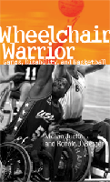

<body bgcolor="#FFFFFF" text="#000000" link="#0000FF" vlink="#CC0000" alink="#CC0000"><center><hr width="350" size="1" align="center" noshade>The remarkable story of a disabled man’s struggle to make a productive life for himself<hr width="350" size="1" align="center" noshade><p><a href="https://cdcshoppingcart.uchicago.edu/Cart/ChicagoBook.aspx?ISBN=9781592134748&&PRESS=temple" target="_top">Buy this book!</a> | <a href="https://cdcshoppingcart.uchicago.edu/Cart/Cart.aspx?PRESS=temple" target="_top">View Cart</a> | <a href="https://cdcshoppingcart.uchicago.edu/Cart/Cart.aspx?PRESS=temple" target="_top">Check Out</a></p><p></p></center><!--none//--><h1>Wheelchair Warrior</h1>
<H2>Gangs, Disability, and Basketball</H2>
<h3>Melvin Juette and Ronald J. Berger</h3>
<P>cloth 1592134742 $60.50, Feb 08, <FONT COLOR=#990033>Available</FONT>
<br>paper 1592134750 $23.95, <FONT COLOR=#990033>Available</FONT>
<br>Electronic Book 1592134769 $23.95 <FONT COLOR=#990033>Available</FONT>
<BR> 192 pp
5.5x8.25
10&nbsp;halftones
</P><BLOCKQUOTE><I>"A compelling and richly sociological memoir. The incisive introduction and conclusion highlight how and why Melvin’s successes are not simply of his own making. </I>Wheelchair Warrior<I> provides the reader with an enlightening analysis of how history and society intersect with biography in Melvin’s life."</I>
<BR>&#151<B>Kent Sandstrom</B>, University of Northern Iowa</I></BLOCKQUOTE>
<p>Melvin Juette has said that becoming paralyzed in a gang-related shooting was "both the worst and best thing that happened" to him. The incident, he believes, surely spared the then sixteen year-old African American from prison and/or an early death. It transformed him in other ways, too. He attended college and made wheelchair basketball his passion—ultimately becoming a star athlete and playing on the U.S. National Wheelchair Basketball Team.
<p>In <i>Wheelchair Warrior</i>, Juette reconstructs the defining moments of his life with the assistance of sociologist Ronald Berger. His poignant memoir is bracketed by Berger’s thoughtful introduction and conclusion, which places this narrative of race, class, masculinity and identity into proper sociological context, showing how larger social structural forces defined his experiences. While Juette’s story never gives into despair, it does challenge the idea of the “supercrip.”
<BR>&nbsp;<h2>Excerpt</h2><P>Excerpt available at <a href="http://www.temple.edu/tempress">www.temple.edu/tempress</a></p>
<BR>&nbsp;<h2>Reviews</h2>
<P>"<I>Juette’s story follows his evolution from boy to man, from gang member to wheelchair athlete, and it’s a story of determination and inspiration that will touch everyone who reads it."<br><b>&#151 Booklist</b></i>
<P>"<I>Juette offers an informative ethnography on both gang life and wheelchair basketball….His accounts of gang life alone would recommend his book as a worthy assigned text by those who teach courses on the sociology of deviance and gangs. Those who teach sport sociology courses would also find merit in the first-hand accounts of participation in the National Wheelchair Basketball Association, which was founded in 1949. In short, this book has something to offer both academics and lay readers."<br><b>&#151 Library Journal</b></i>
<p><i>"Juette's story is about overcoming disability. He moves from Chicago gangbanger to disabled youth to wheelchair athlete and college student, and ends up with championships, a career, and a wife and family. One of Juette's college professors helps tell the story, and writes an introduction and conclusion that bracket the autobiography with a sociological analysis. The autobiography is a pleasant and easy read.... Summing Up: Recommended."</i>
<br>&#151<b><i>Choice</i></b>
<P><i>"</i>Wheelchair Warrior<i> is well organized.... its methodological design...allows Juette and Berger not only to play to their respective strengths, but it also allows the story to unfold as un-obtrusively as possible free of the limits of existing prejudices about gang members or the physically challenged. Another strength of the book is how the analysis skillfully assesses the role that institutions play in shaping the transformation of various identities experienced by Juette..... </i>Wheelchair Warrior<i> seeks to overcome the nostalgia of one man heroically overcoming the odds of disability, the story as told manages to hail Melvin Juette as a young man who was forced to successfully manage the adversities of complex sociological conditions." <br><b>&#151 Contemporary Sociology</b></i>
<P><i>"</i>Wheelchair Warrior<i> is a great read if you are looking for a story of someone defying the odds and overcoming adversity... The book portrays the transition of Juette from gang member to star athlete. It provides interesting details about gang life, the craft of psycho-biography, and wheelchair basketball. It is the account of one person's life-affirming response to disability." <br><b>&#151 The Prevention Researcher</b></i>
<BR>&nbsp;<h2>Contents</h2><P>
<BR>Preface
<BR>Introduction
<P>Part I: Beginnings
<BR>1. Roots
<BR>2. In the Company of Peers
<BR>3. Gangs
<BR>4. The Shooting
<P>Part II: Transitions
<BR>5. Road to Recovery
<BR>6. Breaking Away
<BR>7. A Motley Crew
<p>Part III: Resolutions
<P>8. Fundamentally Sound
<br>9. Lost and Found
<BR>10. The Best of All Victories
<BR>Conclusion
<BR>Notes
<BR>Index
</P><BR>&nbsp;<H2>About the Author(s)</H2>
<table><tr><td valign="top"><img src="/tempress/authors/1836_au1.gif" height="90" width="75"></td><td width="100%" valign="middle"><p><B>Melvin Juette</B> is Community Service Coordinator of the Deferred Prosecution Unit of the Dane County District Attorney's Office in Madison, Wisconsin.</P></td></tr></table><table><tr><td valign="top"><img src="/tempress/authors/1836_au2.gif" height="90" width="75"></td><td width="100%" valign="middle"><p><B>Ronald J. Berger</B> is Professor of Sociology and Chair of the Department of Sociology, Anthropology, and Criminal Justice at the University of Wisconsin-Whitewater.</P></td></tr></table>
<BR><H2>Subject Categories</H2>
<p><A HREF="/tempress/disability.html" TARGET="_top">Disability Studies</a>
<BR><A HREF="/tempress/sports.html" TARGET="_top">Sports</a>
<BR><A HREF="/tempress/african.html" TARGET="_top">African American Studies</a>
</p>
<p align="center"><a href="https://cdcshoppingcart.uchicago.edu/Cart/ChicagoBook.aspx?ISBN=9781592134748&&PRESS=temple" target="_top">Buy this book!</a> | <a href="https://cdcshoppingcart.uchicago.edu/Cart/Cart.aspx?PRESS=temple" target="_top">View Cart</a> | <a href="https://cdcshoppingcart.uchicago.edu/Cart/Cart.aspx?PRESS=temple" target="_top">Check Out</a></p><p><font face="Arial" size="1"><a href="copyright.html" onMouseOver="window.status='Web Copyright Policy';return true;" onMouseOut="window.status=''" title="Web Copyright Policy">&copy;</a> 2015 <a href="http://www.temple.edu" target="new" onMouseOver="window.status='Link to Temple University home page';return true;" onMouseOut="window.status=''" title="Link to Temple University home page">Temple University</a>. All Rights Reserved. http://www.temple.edu/tempress/titles/1836_reg.html</font></p>